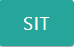
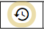

Overview
This is a 4-player Mahjong game. After selecting your username, you will be able to join any open game, or create a private invitational game. During gameplay, unfilled seats will be filled by robot players.
Sign-In

Begin by typing a username in (A). You may select any username that is not already reserved. Your username will identify you in the lobby, and in games once play starts.
If you would like to reserve your username so that no one else can use it, add your email address in field (B). Your email address acts as your password.
Lobby Game Choices
Each Mahjong game seats up to 4 players. Games can be either Public, or Invitational. The difference is that invitational games are private, and only players who are invited may join, whereas public games are open to anyone to join.
All players who are currently connected to the server are shown in the player panel (Fig 2-E).
Joining A Public Game
The game server will ensure that there are always empty games available. In the Public Games section (Fig 2-C), wherever you see a button labelled as SIT, , that means that the seat is open, and you may sit there by clicking the button.
As soon as one player is seated, a start button will appear in the Status column. If you are not waiting for others to join, you can click the start button at any time. Empty seats will be automatically filled by robot players.
If you see a game with JOIN buttons, , this means the game has already started, but still has open seats. Clicking on any of the join buttons will immediately take you into that game, where you will replace a robot player.
Creating Your Own Invitational Game
You can create an invitational game by clicking the NEW GAME button (Fig 2-D). You will be listed as the owner of a new game with 4 open seat as shown in (Fig 3-D2), and you will have the option of inviting other players to your game. Only the owner and invited players can see the invitational game.
Resuming A Game Series
A game series means that the selection of dealer, wind, and scoring will run continuously through multiple games. When an in-progress game ends in a win (Woo) or a stalemate (because the deck runs out), the players may continue to the next game, with dealer and wind advancing according to the game rules.
When game-play has completed, and all players have left the game, the server will save a record of the game series, so that the players can continue the game at a later date. The saved game series will appear in the lower part of the Invitational Games section, and be visible only to players who participated in the game.
Game series controls are shown in Fig 3:-D3-D4-D5. In this example, there are two saved game series: one that was last played on 2021-09-12 (year-month-date), and another that was last played on 2021-09-18. Clicking on the date buttons in Fig 3-D4 will show a summary of the running game scores.
You can resume a past game series by clicking the resume icon, , found to the left of Fig 3-D3. This creates an invitational game with all past participants invited and listed as owners. Below each SIT button, the name of the most recent occupant of that seat will be shown.
Finally, if you are not interested in resuming a series, you can delete it from the server by clicking the trash icon in Fig 3-D5.
Other Lobby Game Controls
Fig 3-D6 shows additional controls for game owners. The chart icon, timeline, will show a summary of the scores of an in-progress game series, but only once the first game has completed. The orange stop icon, cancel, will terminate a game, ejecting any seated players.